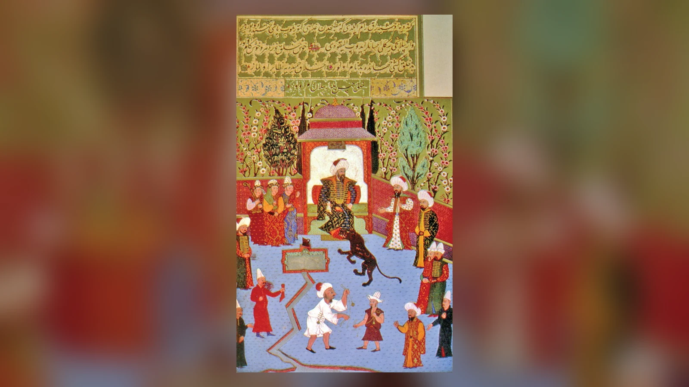
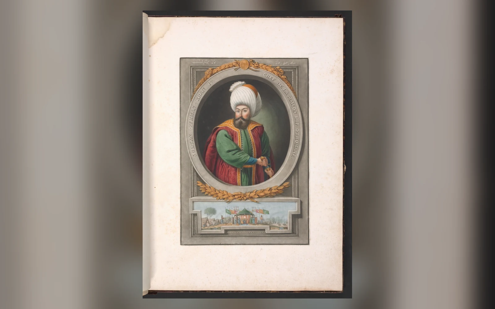
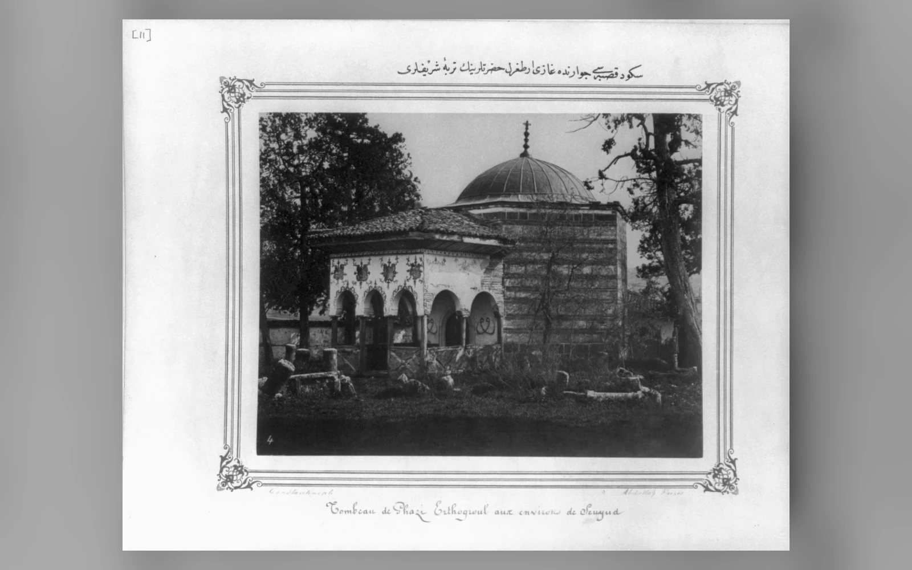
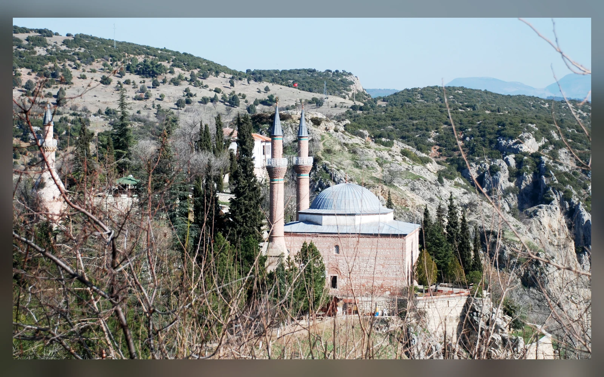
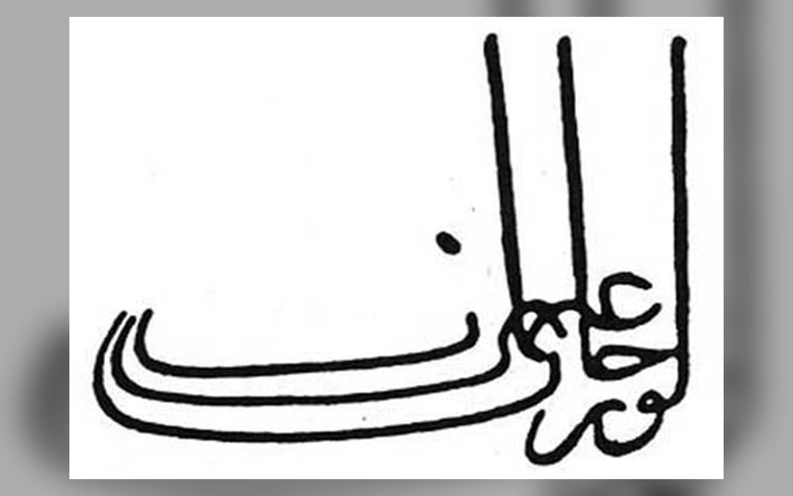
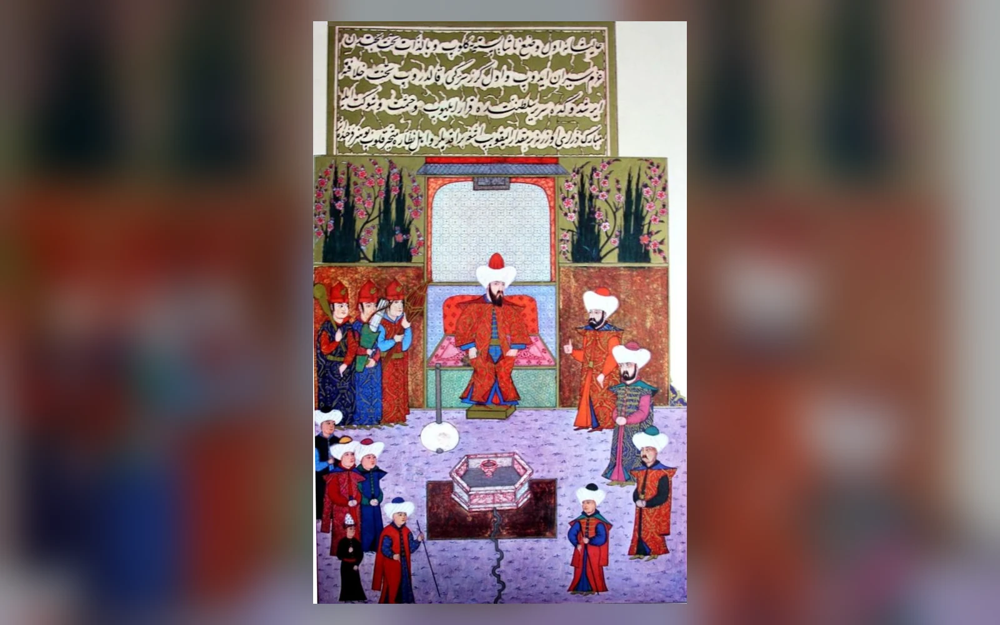
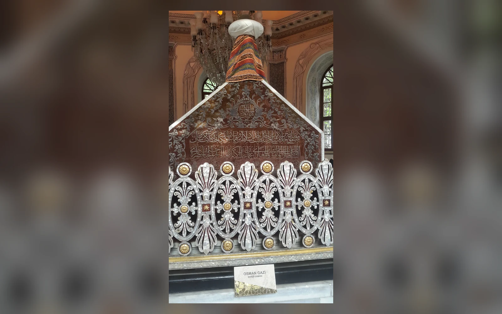

1299, Osmanlı Devleti'nin kuruluş tarihi olarak hemen herkesin bildiği bir yıldır. Fakat elimizde 1299'da imzalanmış bir "kuruluş belgesi", Osman Bey'in bağımsızlığını ilan ettiği çağdaş bir tutanak veya o gün yeni bir devlet doğduğunu kaydeden güvenilir bir metin yoktur. Erken Osmanlı tarihinin temel güçlüğü burada başlar: Sonraki yüzyıllarda büyük bir imparatorluğa dönüşecek siyasi yapının ilk yılları, kendi döneminden kalan kaynaklarda şaşırtıcı ölçüde sessizdir.
Buna rağmen Osman Bey bütünüyle sislerin içinde değildir. XIII. yüzyılın sonlarında Bizans sınırında faaliyet gösteren yerel bir Türkmen lideriyken birkaç on yıl içinde çevresine savaşçılar ve müttefikler toplayan, İznik ve Bursa çevresindeki Bizans topraklarını tehdit eden güçlü bir uç beyine dönüştüğü izlenebilir. Çağdaşı Bizans tarihçisi Georgios Pachymeres'in 1302 Bafeus Savaşı bağlamında Osman'dan açıkça söz etmesi, onu efsane ile tarih arasındaki belirsiz alandan çıkaran en önemli kanıtlardan biridir.
Osman Gazi, XIII. yüzyılın sonları ile XIV. yüzyılın başlarında Bizans sınırında güçlenen Osmanlı hanedanının kurucusudur. Osmanlı Devleti ise tek bir günde kurulmadı. Osman'ın çevresinde oluşan siyasi ve askerî çekirdek, Orhan Bey döneminde Bursa, İznik ve İzmit gibi şehirlerin ele geçirilmesi; vakıflar, para, idare ve düzenli kurumların belirginleşmesiyle daha açık bir devlet yapısına dönüştü. Bu nedenle 1299 geleneksel ve sembolik kuruluş tarihi olarak önemini korurken, bazı tarihçiler 1302 Bafeus zaferini Osman'ın bağımsız bir siyasi güç olarak görünür hâle geldiği daha somut dönüm noktası kabul eder.
Bu ayrım "Osmanlı Devleti nasıl kuruldu?" sorusunun cevabını da değiştirir. Osmanlıların yükselişi bir çadırda alınan tek kararla veya bir hükümdarın yıllar öncesinden hazırladığı imparatorluk planıyla açıklanamaz. Anadolu Selçuklu otoritesinin çözülmesi, İlhanlı baskısı, Türkmen hareketliliği, Bizans'ın Batı Anadolu'daki bölgesel sorunları, uç toplumunun esnek yapısı, ganimet ve yeni toprak imkânları, derviş çevreleri, yerel Hristiyan aktörler ve Osman'ın başarılı liderliği aynı tarihsel ortamda birleşti.

Osman Gazi Kimdir?
Osman Gazi veya Osman Bey, Osmanlı hanedanına adını veren ve hanedanın ilk siyasi çekirdeğini oluşturan hükümdardır. Babasının Ertuğrul olduğu konusunda güçlü bir tarih geleneği ve erken hanedan belgeleri vardır. Buna karşılık popüler biyografilerde sıkça verilen 1258 doğum tarihi, Söğüt'te doğduğu bilgisi, annesinin Halime Hatun olduğu iddiası, çocukluk eğitiminin ayrıntıları ve fiziksel görünüşü aynı kesinlik düzeyinde değildir.
Halil İnalcık, geç Osmanlı rivayetindeki yaş hesabından hareketle Osman'ın doğumunu yaklaşık 1257 civarına yerleştirir. Bu bir çağdaş doğum kaydına dayanmaz. Aynı nedenle Osman'ın çocukluğunu ayrıntılı sahnelerle anlatmak mümkün değildir. Sonraki kroniklerde cesareti, cömertliği, giyim tarzı veya sofrası hakkında verilen ayrıntılar, Osman'ın yanında tutulmuş bir saray günlüğünün notları değildir. Bunlar hanedanın kuruluşundan uzun süre sonra şekillenmiş tarih ve menkıbe geleneğinin parçalarıdır.

Osman'ın hayatı hakkında güvenin yükseldiği dönem XIII. yüzyılın sonuna yaklaştıkça başlar. Pachymeres, Osman'ı kuzeybatı Anadolu'daki Türk hareketliliği içinde gerçek bir siyasi-askerî aktör olarak kaydeder. Osmanlı kronikleri ise Karacahisar, Bilecik, Yarhisar, İnegöl, Yenişehir ve çevresindeki mücadeleleri ayrıntılandırır. Kroniklerin yazım tarihi geç olsa da yer adları, coğrafya, sonraki tahrir kayıtları ve Bizans anlatılarıyla karşılaştırıldığında erken geleneğin bütünüyle hayal ürünü olmadığı görülür.
Osman'a hangi unvanı vermek gerektiği de önemlidir. Kaynaklarda "Bey", "Gazi" ve sonraki anlatılarda "Han" gibi unvanlarla karşılaşılır. "Gazi", İslam dünyasının sınır savaşçılığı ve din uğruna mücadele kavramlarıyla bağlantılıydı; ancak uç bölgesindeki siyasi gerçekliği yalnız bu unvanla açıklamak mümkün değildir. Osman'ı yaşadığı dönemde bugünkü anlamıyla merkezi kurumlara sahip bir imparatorluğun "padişahı" gibi tasvir etmek anakronizmdir. O, başlangıçta sınır bölgesinde savaşçıları çevresinde toplayan bir uç lideriydi; gücü genişledikçe hanedan kurucusu bir beye dönüştü.
Bu dönüşümün önemi, sonraki Osmanlı büyüklüğünü bir an için unutunca daha iyi görülür. Osman'ın önünde "altı yüz yıl yaşayacak Osmanlı İmparatorluğu" diye hazır bir proje yoktu. Aynı coğrafyada Germiyanoğulları, Karesioğulları, Menteşeoğulları, Aydınoğulları ve başka Türkmen siyasi oluşumları da vardı. Osman'ın tarihsel başarısı ileride ne olacağını bilmesinde değil, kendi çağındaki fırsatları kullanarak ailesinin liderliğini kalıcı bir siyasi merkeze dönüştürebilmesindeydi.
Ertuğrul Gazi ve Osmanlıların Kökeni
Osman Gazi'nin babasının Ertuğrul olduğu genel kabul görür; fakat Ertuğrul'un hayatına ilişkin ayrıntılar Osman'ınkinden bile daha geç kaynaklara dayanır. Çağdaş Bizans tarihçileri Ertuğrul'dan söz etmez. XIV. yüzyılın önemli İslam coğrafyacı ve seyyahlarında da onun hakkında doğrudan bilgi yoktur. Ertuğrul'un biyografisinin büyük bölümü XV. yüzyılda yazılan Osmanlı kronikleri ve hanedan geleneklerinden kurulmuştur.
En bilinen sorun Ertuğrul'un babasının kim olduğudur. Popüler anlatıda "Süleyman Şah" adı çok yaygındır; Fırat'ı geçerken boğulduğu, Caber Kalesi çevresine gömüldüğü ve oğullarının buradan Anadolu'ya dağıldığı anlatılır. Fakat erken şecereler birbirini tutmaz. Enverî'nin kullandığı gelenekte Ertuğrul'un babası Gündüz Alp olarak görünür. Başka kronikler ise soy çizgisine Süleyman Şah'ı yerleştirir. Osmanlı hanedanının ilk dönemine atfedilen bazı sikke okumaları da Gündüz Alp adını tartışmaya dâhil etmiştir. Bu nedenle "Ertuğrul'un babası kesin olarak Süleyman Şah'tı" demek güvenli değildir.
Ertuğrul topluluğunun Söğüt ve Domaniç çevresine nasıl geldiği konusunda da aynı dikkat gerekir. Gelenek, Selçuklu sultanına yardım eden Ertuğrul'a önce Karacadağ, ardından Söğüt ve Domaniç'in yurt olarak verildiğini anlatır. Söğüt'ün kışlak, Domaniç'in yaylak olarak kullanıldığı hafıza bölgenin göçebe-yarı göçebe hayat biçimiyle uyumludur. Fakat bu tahsislerin ayrıntılarını doğrulayan çağdaş bir Selçuklu fermanı elimizde değildir.
Söğüt erken Osmanlı topluluğu için önemli bir merkezdi; fakat onu modern anlamda bakanlıkların ve düzenli devlet dairelerinin bulunduğu "ilk başkent" şeklinde hayal etmek yanıltıcıdır. Osman'ın siyasi dünyası hareketliydi. Söğüt, Domaniç, Karacahisar, Bilecik ve daha sonra Yenişehir farklı işlevler taşıyan merkezler hâline geldi. Devletin büyümesiyle "merkez" kavramının kendisi de değişti.

Osmanlılar Gerçekten Kayı Boyundan mıydı?
Osmanlı hanedanının Oğuzların Kayı boyundan geldiği, bugün kuruluş hikâyesinin en tanınmış parçalarından biridir. Kayı gerçek bir Oğuz boyudur; Kaşgarlı Mahmud'dan Reşîdüddin'e kadar Osmanlılardan önceki kaynaklarda adı ve damgası bilinir. Tartışma Kayıların varlığı değil, Osmanlı hanedanının bu boya mensubiyetinin Osman dönemine ait çağdaş kanıtla gösterilip gösterilemediğidir.
Osman'ı açık biçimde Kayı soyuna bağlayan şecereler özellikle XV. yüzyılda belirginleşir. Yazıcızâde Ali'nin II. Murad döneminde kaleme aldığı anlatı, Kayı'nın Oğuz boyları içindeki üstün konumunu vurgular ve Osman'ın han seçilişini bu soy üzerinden meşrulaştırır. Halil İnalcık, Timur ve Şahruh döneminde Osmanlı hanedanının siyasi meşruiyetini savunma ihtiyacının Kayı şeceresinin öne çıkarılmasında etkili olduğunu belirtir. Paul Wittek de Kayı bağlantısının sonraki hanedan siyaseti içinde inşa edildiğini savunmuştur; Fuad Köprülü ise Oğuz-Türkmen toplumsal zeminini çok daha ciddi biçimde hesaba katmıştır.
Buradan "Osmanlılar kesinlikle Kayı değildi" sonucu çıkmaz. Çağdaş kaydın bulunmaması bir mensubiyetin imkânsız olduğunu kanıtlamaz. Ancak "Osman'ın Kayı boyundan olduğu kendi dönemindeki belgelerle kesin biçimde kanıtlanmıştır" demek de mevcut kanıtı aşar. En güvenli sonuç, Kayı bağlantısının Osmanlı hanedan geleneğinde güçlü bir yer edindiği, fakat bu şecerenin açık ve ayrıntılı biçiminin Osman'dan yaklaşık bir asır sonra siyasi anlam kazandığıdır.
Bir hanedan büyüdükçe yalnız toprak değil geçmiş de inşa eder. XV. yüzyıl Osmanlıları artık küçük bir uç beyliği değildi; Timur sonrası Anadolu siyasetinde kendi hükümdarlık haklarını açıklayan güçlü bir soy anlatısına ihtiyaç duyuyorlardı. Oğuz Han ve Kayı üzerinden kurulan şecere bu ihtiyaca son derece uygundu. Bu, şecerenin mutlaka baştan sona uydurma olduğu anlamına gelmez; fakat anlatının hangi dönemde neden önem kazandığını açıklar.
Osmanlı Devleti Kurulurken Anadolu'nun Durumu
Osman Bey'in yükselişini anlamak için XIII. yüzyılın ikinci yarısındaki Anadolu'ya bakmak gerekir. 1243 Kösedağ yenilgisi Anadolu Selçuklu Devleti'ni hemen ortadan kaldırmadı, fakat Moğol-İlhanlı üstünlüğünü kalıcı hâle getiren büyük dönüm noktası oldu. Selçuklu sultanları hüküm sürmeye devam ederken gerçek siyasi hareket alanları daraldı; İlhanlıların vergi ve askerî baskısı Anadolu'daki güç ilişkilerini değiştirdi.
Türkmen topluluklarının bir bölümü merkezî denetimin daha zayıf olduğu uçlara yöneldi. Batı Anadolu'da Bizans sınırı bu hareket için özellikle elverişliydi. Burada Menteşe, Aydın, Saruhan, Germiyan ve Karesi gibi farklı beylikler ortaya çıktı veya güçlendi. Osman'ın topluluğu bu büyük dönüşümün küçük parçalarından biriydi. Dolayısıyla Osmanlı kuruluşunu yalnız "Selçuklu yıkıldı, Osmanlı kuruldu" çizgisiyle anlatmak doğru değildir; iki süreç uzun süre üst üste bindi.
Bizans'ın durumu da "tamamen çökmüş imparatorluk" klişesine sığmaz. Konstantinopolis merkezli devlet XIII. yüzyılın sonlarında Balkanlar, hanedan mücadeleleri, mali sorunlar ve doğu sınırının savunması arasında kaynak dağıtmak zorundaydı. Batı Anadolu'daki askerî ve idari kapasitenin zayıflaması Türkmen akınlarına alan açtı. Buna rağmen İznik, Bursa, İzmit ve çok sayıda kale ciddi savunma noktalarıydı. Osmanlıların bu şehirleri ele geçirmesi yıllar, hatta on yıllar süren baskı ve abluka gerektirdi.
Sınırda "tekfur" diye anılan yerel Bizans yöneticileri de yekpare bir blok değildi. Birbirleriyle rekabet edebilir, Türk beyleriyle geçici anlaşmalar yapabilir veya daha güçlü bir komşunun himayesine girebilirlerdi. Köse Mihal geleneği bu esnekliğin en ünlü örneğidir. Osmanlı tarih geleneğinde Harmankaya tekfuru olarak görünen Mihal'in Osman'ın müttefiki olduğu, daha sonra Müslüman olduğu ve Mihaloğulları akıncı ailesinin atası sayıldığı anlatılır. Ayrıntıların tamamı çağdaş kayıtlarla doğrulanmasa da sonraki Mihaloğulları ailesinin varlığı sınır dünyasındaki geçişkenliğin önemli göstergesidir.
Coğrafya Osman'a avantaj sağladı. Söğüt-Eskişehir hattı ile Sakarya havzası, Bizans'ın Bitinya şehirlerine açılan güzergâhlara yakındı. İznik ve Bursa gibi zengin yerleşimlerin çevresinde yapılan akınlar ganimet, arazi ve siyasi prestij üretebiliyordu. Fakat coğrafya kader değildi. Aynı dönemde çok sayıda Türkmen beyliği benzer fırsatlara sahipti. Osmanlıların büyümesini açıklamak için konumun yanında liderlik, ittifak kurma, hanedan devamlılığı ve sonraki kuşakların başarıları gerekir.
Uç bölgesi sadece savaş alanı değildi. Köyler, pazarlar, tarım arazileri, hayvan sürüleri, yollar, derbentler ve kaleler burada yaşayan insanların gündelik hayatını belirliyordu. Bir kaleyi almak yalnız askerî prestij sağlamıyor; çevresindeki üretim alanlarına, geçiş noktalarına ve vergi kaynaklarına erişim anlamına geliyordu. Osmanlı genişlemesinin kalıcı olabilmesi, akın yapıp geri dönmekten farklı olarak bu ekonomik kaynakları yeni siyasi düzenin içine alabilmesine bağlıydı.
Osman Bey Nasıl Güç Kazandı?
Osman'ın ilk kuvvetinin büyüklüğünü kesin rakamlarla bilmiyoruz. Onu başlangıçtan itibaren on binlerce kişilik düzenli orduya sahip hükümdar gibi düşünmek için neden yoktur. Uç beylerinin çevresindeki savaşçı gruplar kişisel bağlılık, ganimet beklentisi, akrabalık, dinî motivasyon, macera ve yeni toprak fırsatları gibi birden fazla nedenle bir lidere katılabiliyordu. Başarılı lider daha fazla savaşçı çekiyor; büyüyen kuvvet yeni başarıların ihtimalini artırıyordu.
Osman'ın yükselişinde bu siyasi çekim mekanizması özellikle önemlidir. Pachymeres'in Bafeus sonrasında Osman'ın şöhretinin yayıldığını ve çevresine yeni savaşçıların geldiğini belirtmesi, geç Osmanlı kroniklerinden bağımsız çağdaş bir ipucu sunar. Bir kalenin veya savaşın kazancı yalnız o gün elde edilen ganimet değildi. Zafer, "bu liderin peşinden gidildiğinde kazanılıyor" algısı yaratıyordu. Uç dünyasında itibar doğrudan insan gücüne dönüşebiliyordu.
Dervişler ve dinî çevreler de bu toplumsal ağın parçasıydı. Şeyh Edebali'nin tarihsel bir kişi olduğu ve Bilecik çevresinde zaviye geleneğiyle ilişkilendirildiği kabul edilir. Ahilerle bağlantılar konusunda kaynaklar daha dikkatli kullanılmalıdır. Sonraki Osmanlı anlatıları erken devletin çevresine ahileri, dervişleri, gazileri ve fakihleri yerleştirir. Bu çevrelerin hepsini tek bir merkezden yönetilen kuruluş örgütü gibi göstermek doğru değildir; fakat sınır toplumunun askerlerden ibaret olmadığını hatırlatırlar.
Kuruluş tartışmasının en ünlü açıklamalarından biri Paul Wittek'in "gaza tezi"dir. Wittek, erken Osmanlı kimliğinde İslam adına sınır savaşı ve gazi ideolojisini belirleyici görmüştü. Bu yaklaşım uzun süre tarihçiliği etkiledi. Rudi Paul Lindner ise aşiret ve göçebe toplumsal yapıyı öne çıkararak katı bir dinî ideoloji modelini sorguladı. Heath Lowry, ganimet ve kapsayıcı savaşçı konfederasyonuna daha fazla ağırlık verdi. Colin Imber erken kaynakların geçliği nedeniyle kuruluş anlatılarına çok daha kuşkucu yaklaştı.
Fuad Köprülü Osmanlıları Anadolu'nun XIII-XIV. yüzyıllardaki geniş Türk-İslam sosyal tarihi içinde ele alarak tek nedenli açıklamaların önünü daha erken dönemde açmıştı. Cemal Kafadar'ın yaklaşımı tartışmayı "ya gaza ya aşiret" ikiliğinden çıkarır. Uç toplumunda dinî, etnik, siyasi ve toplumsal kimliklerin aynı anda işleyebildiğini; insanların tek bir motivasyona indirgenemeyeceğini gösterir. Bu, kaynakların karmaşık tablosuna daha uygun görünür.
Gaza gerçek bir kavramdı ve erken Osmanlıların kendilerini anlamlandırmasında giderek önemli hâle geldi. Fakat Osman'ın bütün Hristiyanlarla sürekli savaş hâlinde olduğunu düşünmek gerçek sınır siyasetini açıklamaz. Yerel Hristiyanlarla ittifak, teslim olan unsurların sisteme katılması ve pragmatik ilişkiler de vardı. Aynı şekilde ganimetin önemli olması, dinî motivasyonun sahte olduğu anlamına gelmez. Erken Osmanlı başarısının gücü, farklı çıkar ve kimlikleri aynı genişleme hareketinin içinde birleştirebilmesinde aranabilir.
Osman Gazi'nin İlk Savaşları ve Fetihleri
Osmanlı kronikleri Osman'ın İnegöl çevresindeki çatışmalarını, Kulacahisar ve Karacahisar'ın alınmasını, ardından Bilecik-Yarhisar hattındaki genişlemeyi hanedanın ilk askerî hikâyesi olarak anlatır. Fakat bu olayların tarihleri ve ayrıntıları kronikten kroniğe değişebilir. Ermenibeli çatışması, Domaniç veya İkizce savaşı ve Savcı Bey'in ölümü gibi anlatılar, çağdaş Bizans kaydıyla günü gününe doğrulanabilen olaylar değildir.
Karacahisar özel bir yere sahiptir. Eskişehir yakınındaki kale arkeolojik olarak gerçek ve önemli bir Ortaçağ yerleşimidir. Osmanlı kronikleri Osman'ın burayı ele geçirdikten sonra Müslüman nüfus yerleştirdiğini, pazar kurduğunu, kadı tayin ettiğini ve kendi adına hutbe okuttuğunu anlatır. Bu unsurlar sonraki Osmanlı tarihçileri için fetih ile siyasi egemenliğin birleştiği işaretlerdi. Fakat hutbe anlatısının bize ulaşan biçimi Osman döneminin çağdaş belgesinden değil, geç kroniklerden gelir.
Bilecik ve Yarhisar'ın ele geçirilmesi daha dramatik bir hikâyeyle aktarılır. Kroniklerde Bilecik tekfurunun düğün vesilesiyle Osman'a tuzak kurduğu, Köse Mihal'in onu uyardığı, Osman'ın da düğünü tersine çeviren bir planla kaleleri ele geçirdiği anlatılır. Bazı popüler versiyonlarda kadın kıyafetine giren savaşçılar, yüklerin içine saklanan silahlar ve kaçırılan gelin gibi ayrıntılar öne çıkar. Bunlar etkileyici sahnelerdir, fakat olaydan çok sonra yazılmış anlatıların dramatik unsurlarıdır.
Yarhisar tekfurunun kızı Holofira'nın daha sonra Nilüfer Hatun olduğu ve Orhan Bey'le evlendiği geleneği de bu hikâyeye bağlanır. Nilüfer Hatun tarihsel hanedan geleneğinde önemli bir kişidir; fakat düğün gecesindeki bütün ayrıntıları çağdaş kayıtla doğrulamak mümkün değildir. Erken Osmanlı tarihini televizyon senaryosu gibi anlatmamak tam da burada önem kazanır.
Köse Mihal'in Osman'la ilişkisi, fetihlerden daha uzun vadeli bir siyasi sonucu temsil eder. Osmanlı geleneği onu Harmankaya'nın Hristiyan tekfuru iken Osman'ın dostu ve yol arkadaşı olan, daha sonra İslam'ı kabul eden kişi şeklinde gösterir. Mihaloğulları ailesi sonraki Osmanlı tarihinde gerçek ve etkili bir akıncı hanedanıdır. Bu devamlılık, Osmanlı genişlemesinin yerel elitleri bütünüyle yok etmek yerine bazılarını yeni siyasi yapının içine alabilme kapasitesine işaret eder.
Osman adına hutbe okunması ve sikke basılması bağımsızlık tartışmasının merkezindedir. İslam siyasi geleneğinde hutbe ve sikke hükümdarlığın güçlü sembolleriydi. Osman'a atfedilen "Osman bin Ertuğrul" ibareli sikkeler bilim dünyasında yayımlanmış, farklı örnekler de tartışmaya açılmıştır. Bununla birlikte darp tarihi ve yeri bulunmayan örneklerin özgünlüğü ve kesin tarihlendirmesi konusunda nümismatik tartışma devam eder. Bu yüzden "ilk Osmanlı parasını Osman kesin olarak şu yıl bastı ve devlet o gün kuruldu" şeklinde bir sonuç güvenli değildir.
Osmanlı Devleti 1299'da mı, 1302'de mi Kuruldu?
Osmanlı kuruluş tarihinin en popüler sorusu iki rakama indirgenir: 1299 mu, 1302 mi? Gerçekte mesele bir takvim yarışından daha karmaşıktır. Önce 1299'un ne anlama geldiğini ayırmak gerekir. Geleneksel Osmanlı kronolojisinde bu tarih, Selçuklu otoritesinin çözülmesi ve Osman'ın bağımsız hükümdarlığa yönelmesiyle ilişkilendirilmiştir. Karacahisar'da hutbe okunması, Selçuklu sultanından bağımsız davranılması veya Osman'ın "han" hâline gelmesi gibi anlatılar bu çerçeveye eklenmiştir.
Sorun, 1299'da "Osmanlı Devleti kurulmuştur" diyen çağdaş bir belge bulunmamasıdır. Üstelik Selçuklu siyasi varlığı 1299'da bir anda sona ermedi. II. Mesud'un Selçuklu hükümdarlığı 1308'e kadar devam etti ve Anadolu üzerindeki İlhanlı üstünlüğü de sürdü. Bu nedenle "Selçuklu 1299'da yıkıldı, Osman aynı gün bağımsızlığını ilan etti" biçimindeki okul kitabı şeması tarihsel süreci fazla keskinleştirir.
1299 yine de anlamsız bir tarih değildir. Osmanlı tarih geleneğinin ve modern kronolojinin hanedanın bağımsız siyasi başlangıcını sembolleştirdiği tarihtir. Yenişehir'in Osman'ın faaliyetlerinde merkez hâline gelmesi ve Bizans sınırındaki baskının yoğunlaşması da yaklaşık bu yıllara denk gelir. Devletlerin kuruluş yıldönümü için tek bir tarih seçmek pratik bir ihtiyaçtır; 1299 bu sembolik işlevi uzun süredir taşır.
1302'nin gücü ise farklıdır. 27 Temmuz 1302'deki Bafeus Savaşı çağdaş Bizans tarihçisi Pachymeres tarafından kaydedilir. Osman'ın kuvvetleri, İznik üzerindeki baskıyı kırmak amacıyla gönderilen Bizans ordusuyla karşılaştı ve zafer kazandı. Bu, Osman'ın yalnız komşu küçük kale sahipleriyle çatışan yerel lider olmaktan çıkıp Bizans merkezî yönetiminin askerî müdahalesini gerektiren bir tehdit hâline geldiğini gösterir.
Halil İnalcık bu nedenle Bafeus'u hanedanın ve devletin kuruluşu bakımından belirleyici dönüm noktası kabul eder. Pachymeres'in anlatısında zaferden sonra Osman'ın şöhretinin yayılması ve yeni savaşçıların onun çevresine yönelmesi özellikle önemlidir. Osman'ın siyasi gücü artık yalnız ailesinin veya yakın çevresinin kabulüne dayanmıyor; askerî başarı daha geniş bir çekim yaratıyordu.
Fakat 1302'yi de "tek doğru kuruluş tarihi" diye sunmak aynı sorunu başka rakamla tekrarlar. Bafeus günü Osmanlıların bir anda düzenli bürokrasiye, gelişmiş maliyeye, başkente ve bütün devlet kurumlarına kavuştuğuna dair kanıt yoktur. Siyasi topluluk ve hanedan çekirdeği Osman'ın daha önceki faaliyetleriyle oluşmuştu; kurumsallaşma ise Orhan döneminde de devam etti.
Burada "beylik", "hanedan", "siyasi topluluk" ve "devlet" kelimeleri arasındaki sınırın modern hukuk kadar keskin olmadığını kabul etmek gerekir. Bir sınır beyinin çevresinde vergi, savaş, adalet ve toprak dağıtımı gibi egemenlik işlevleri oluşmaya başladığında devletleşme de başlamış sayılabilir. Ancak bu işlevlerin tek günde tamamlanması gerekmez.
En makul değerlendirme, Osmanlı Devleti'ni bir kuruluş anından çok kuruluş süreci içinde görmektir. Osman Bey hanedanın ve siyasi çekirdeğin kurucusudur. 1299 bu başlangıcın geleneksel sembolik tarihidir. 1302 Bafeus ise Osman'ın bağımsız ve güçlü bir sınır lideri olarak çağdaş bir kaynakta açık biçimde görünür olduğu, askerî başarısının siyasi çekime dönüştüğü çok daha sağlam bir dönüm noktasıdır. Orhan dönemindeki şehir fetihleri, vakfiyeler, sikke düzeni ve kurumlaşma ise bu çekirdeği belirgin bir devlete dönüştürmüştür.
Bafeus Savaşı Neden Kuruluşun Dönüm Noktası Sayılıyor?
Bafeus veya Bapheus Savaşı 27 Temmuz 1302'de, İznik Körfezi'nin güneydoğu çevresinde Yalakova/Hersek bölgesiyle ilişkilendirilen alanda gerçekleşti. Bizans kuvvetlerinin başında Georgios Mouzalon bulunuyordu. Amaç, Osman'ın İznik çevresindeki baskısını azaltmak ve bölgedeki Bizans savunmasını rahatlatmaktı. Osman'ın zaferi Bizans'ın Bitinya'daki durumunu daha da zorlaştırdı.
Bafeus'un "Koyunhisar Savaşı" adıyla özdeşleştirilmesi Türkçe literatürde yaygındır; fakat coğrafi ve kronolojik ayrıntılar tartışmalıdır. Osmanlı kroniklerinde Bursa yakınlarındaki Dimbos hattında geçen başka bir Koyunhisar çatışması da vardır. Bu nedenle Bafeus ile sonraki Koyunhisar anlatılarındaki bütün ayrıntıları tek savaşa aitmiş gibi birleştirmek güvenli değildir.
Savaşın asıl önemi fethedilen topraktan çok yarattığı itibardadır. Pachymeres, Osman'ın başarısından sonra şöhretinin geniş alana yayıldığını aktarır. Uç dünyasında başarı yeni savaşçıları, göçmenleri ve fırsat arayan grupları çekiyordu. Bu mekanizma Osman'ın büyümesini açıklayan en somut ipuçlarından biridir: zafer daha fazla insan getiriyor, daha fazla insan yeni seferlerin kapasitesini artırıyordu.
Bafeus Bizans direnişini bitirmedi. İznik hemen düşmedi; Bursa da 1326'ya kadar alınamadı. İzmit daha sonra Osmanlı hâkimiyetine girdi. Tam tersine bu uzun süre, Osmanlı büyümesinin tek muharebeyle açıklanamayacağını gösterir. Bafeus kapıyı açan siyasi prestij zaferiydi; Bitinya'nın ele geçirilmesi sonraki kuşağa uzanan yavaş bir kuşatma ve yerleşme süreci oldu.
Osman'ın Rüyası Gerçek mi?
Osman'ın Rüyası, Osmanlı kuruluş anlatısının en güçlü sembolüdür. En bilinen biçiminde Osman, Şeyh Edebali'nin yanında uyurken şeyhin göğsünden veya koynundan çıkan bir ayın kendi göğsüne girdiğini, ardından göbeğinden büyük bir ağacın yükseldiğini görür. Ağacın dalları dünyayı kaplar; dağlar ve nehirler onun gölgesi altında kalır. Edebali rüyayı Osman'ın soyundan büyük bir hükümdarlık çıkacağı şeklinde yorumlar ve kızını ona verir.
Bu anlatıyı Osman'ın o gece gerçekten gördüğü doğrulanmış rüyanın tutanağı gibi okuyamayız. Rüyanın yazılı biçimleri olaydan çok sonra kaleme alınmıştır. Üstelik kronikler arasında rüyayı kimin gördüğü, ayın nereden çıktığı, evlilikteki kadının adı ve ayrıntılar değişir. Bazı geleneklerde rüya Ertuğrul'a kadar geri götürülür.
Rüyanın tarihsel değeri başka yerdedir. Osmanlı hanedanı yükseldikten sonra geçmişini açıklarken başarıyı yalnız savaş gücüyle değil, ilahi takdir ve manevi otoriteyle anlamlandırmıştır. Şeyhin bedeniyle hanedanın bedeni arasında kurulan ay motifi, evlilik yoluyla manevi meşruiyetin siyasi soya aktarılmasını simgeler. Dünyayı örten ağaç ise küçük başlangıcın evrensel hükümdarlığa dönüşmesini, yani anlatının yazıldığı çağda artık gerçekleşmiş olan genişlemeyi geçmişe doğru haber veren işarete çevirir.
Bu yüzden rüyayı "tamamen değersiz masal" diye atmak da hatadır. Rüya Osman'ın hayatının çağdaş belgesi değildir, fakat sonraki Osmanlıların kendi hanedanlarının başarısını nasıl anlamlandırdıklarının son derece değerli belgesidir. Bize XIII. yüzyıl gecesinde Osman'ın zihninden geçenleri değil, sonraki Osmanlı tarih kültürünün hanedanın kökenini nasıl görmek istediğini anlatır.
Şeyh Edebali'nin Kuruluştaki Rolü
Şeyh Edebali menkıbeden ibaret bir kişi değildir. Tarihsel varlığı sonraki vakıf ve arşiv kayıtlarıyla desteklenen bir dinî şahsiyettir. Bilecik çevresinde zaviyesi bulunduğu, fakihlik ve tasavvuf çevreleriyle ilişkili olduğu kabul edilir. Osmanlı geleneği onu Osman Bey'in manevi çevresinin merkezine yerleştirir; Dursun Fakih de bu ağın önemli ismidir.
Bununla birlikte Edebali'yi modern anlamda devletin "baş ideoloğu", bütün Osmanlı kanunlarını hazırlayan kişi veya Osman'a baştan sona imparatorluk programı veren danışman olarak göstermek için kanıt yoktur. Erken uç toplumunda bir şeyhin zaviyesi konaklama, dayanışma, dinî otorite ve sosyal ağ sağlayabilirdi. Bu gerçek bir siyasi-toplumsal etkidir; fakat sonradan oluşturulmuş ayrıntılı devlet planıyla aynı şey değildir.
Edebali'ye atfedilen "İnsanı yaşat ki devlet yaşasın" sözü günümüzde çok yaygındır. Ancak bu ifadenin Osman döneminden kalan çağdaş bir metinde veya erken kroniklerin güvenilir bir bölümünde bu biçimiyle yer aldığı gösterilemez. Aynı durum uzun "Ey oğul" nasihat metinlerinin önemli kısmı için de geçerlidir. Modern dolaşımda Edebali'nin ağzından aktarılan sözleri XIII. yüzyılın stenografik kaydı gibi kullanmamak gerekir.
Edebali'nin tarihsel önemi, efsaneyi temizleyince ortadan kalkmaz. Tam tersine, erken Osmanlı siyasi çevresinin savaşçılar kadar fakihler, şeyhler, dervişler ve yerel toplumsal ağlarla da temas kurduğunu gösteren bir figür olarak daha anlaşılır hâle gelir.

Bala Hatun ve Malhun Hatun Aynı Kişi mi?
Osman Gazi'nin eşleri konusu, popüler kültür ile belgenin en belirgin biçimde ayrıldığı alanlardan biridir. Geç Osmanlı kronikleri Mal veya Malhun Hatun'u Şeyh Edebali'nin kızı ve çoğu zaman Orhan'ın annesi olarak gösterir. Başka geleneklerde Edebali'nin kızının adı Rabia veya Bala Hatun'dur. Modern diziler bu kadınları ayrı ve ayrıntılı biyografileri olan karakterlere dönüştürür.
1324 tarihli Mekece vakfiyesi tartışmayı değiştirir. Belgede "Ömer Bey kızı Mal Hatun" şahitler arasında geçer. Bu kayıt, Mal Hatun'un Şeyh Edebali'nin kızı olamayacağını güçlü biçimde gösterir. Feridun Emecen, Mal Hatun'un Osman'la bağının açık olduğunu ve Orhan'ın annesi olmasının genel kabul gördüğünü, fakat bunun bile mutlak kesinlik taşımadığını vurgular.
Edebali'nin kızı için Rabia/Bala adı sonraki kayıtlarda görülür. "Bala" ile "Mal" adlarının yazma geleneğinde karışmış olabileceğine ilişkin paleografik açıklamalar da vardır. Sonuç olarak Osman'ın iki ayrı kadınla evlenmiş olması mümkündür ve modern tarihçilik çoğu zaman Mal Hatun ile Edebali'nin kızını ayırır; ancak elimizde her ayrıntıyı kesinleştiren çağdaş bir evlilik sicili yoktur.
Orhan'ın annesi meselesinde de aynı dikkat gerekir. Mekece belgesi Mal Hatun'un hanedan çevresindeki gerçek konumunu kanıtlar, fakat "Orhan'ın annesi" diye açık bir cümle kurmaz. Geç tarih geleneği bu bağlantıyı kurduğu için Mal Hatun'un Orhan'ın annesi olması güçlü ihtimaldir. Tarihsel dürüstlük, güçlü ihtimal ile belgeyle doğrudan yazılmış bilgi arasındaki farkı korumayı gerektirir.

Osman Gazi'nin Çocukları Kimlerdi?
Popüler soy ağaçları Osman Gazi'nin çocuklarını çoğu zaman kesin doğum ve ölüm tarihleriyle sıralar. Erken kaynaklar bu kadar temiz bir tablo sunmaz. Orhan Bey hanedanın devamı açısından en önemli oğuldur ve Osman'dan sonra siyasi liderliği devralmıştır. Alâeddin adıyla bilinen bir başka oğul veya hanedan mensubu da gelenekte önemli yer tutar.
1324 Mekece vakfiyesi, geç kroniklerin kısa listelerinden daha geniş bir aile çevresi gösterir. Belgede Çoban, Melik, Hâmid, Pazarlı ve Fatma gibi isimler görülür. Bu nedenle Osman'ın çocuklarını yalnız Orhan ve Alâeddin'den ibaret saymak doğru değildir. Buna karşılık her çocuğun annesini, doğum yılını ve görevini sonradan hazırlanmış listelerden kesinleştirmek de sorunludur.
Alâeddin Bey'e ilk vezirlik, ilk düzenli orduyu kurma, kıyafet ve çeşitli devlet kurumlarını tek başına oluşturma gibi çok sayıda reform atfedilmiştir. Bu anlatıların önemli kısmı sonraki tarih yazımında sistemleşmiştir. Orhan döneminde bürokratik yapı gelişmiş olsa da her kurumu tek bir kişinin "icat ettiği" model erken devletleşmenin kademeli niteliğini gözden kaçırır.
Osman'ın çocuklarıyla ilgili belirsizlik kaynak durumunun iyi örneğidir. Hanedanın kurucusunun ailesi hakkında bile XV. yüzyıl kronikleri ile XIV. yüzyıl belgesi tam örtüşmüyorsa, kuruluş dönemindeki dramatik özel hayat hikâyelerine neden ihtiyatla yaklaşılması gerektiği daha iyi anlaşılır.
Osmanlılar Neden Diğer Beyliklerden Daha Fazla Büyüdü?
Osmanlıların büyümesi çoğu zaman geriye dönük kaçınılmazlık duygusuyla anlatılır. Sanki Söğüt'e yerleşildiği anda İstanbul'un fethi ve üç kıtaya yayılan imparatorluk gelecekte bekliyormuş gibi bir hikâye kurulur. XIII. yüzyıl sonunda yaşayan biri için böyle bir gelecek görünür değildi. Osmanlılar, Anadolu'daki birçok Türkmen siyasi topluluğundan yalnızca biriydi.
Bizans sınırında bulunmak önemli avantaj sağladı. Müslüman komşulara karşı savaşmak yerine zengin Bizans tarım alanları ve şehirlerine doğru genişleme imkânı, ganimet ve yeni toprak arayan savaşçılar için çekiciydi. Marmara havzasına yakınlık, daha sonra Bursa, İznik ve İzmit gibi ekonomik ve stratejik merkezlerin ele geçirilmesine zemin hazırladı.
Fakat Bizans sınırında başka Türkmen grupları da vardı. Osmanlıların farkını tek başına coğrafya açıklamaz. Osman ve Orhan dönemlerinde fethedilen alanların tutulabilmesi, yerel nüfusla ilişkilerin kurulması, teslim olan veya iş birliği yapan Hristiyan unsurların sisteme alınması ve hanedan içindeki liderlik devamlılığı büyümeyi sürdürülebilir kıldı.
Osman'ın başarısının en dikkat çekici tarafı başlangıçta herkesten büyük bir orduya sahip olması değildi. Elde bulunan kanıtlar, başarılı seferlerin çevresine yeni savaşçılar çektiğini düşündürür. Bafeus bunun açık örneğidir. Başarı prestij yaratıyor; prestij insan ve kaynak çekiyor; büyüyen çevre yeni başarıların ihtimalini artırıyordu. Küçük bir liderlik ağı böylece kendi büyümesini besleyen siyasi çekim alanına dönüşebildi.
Bu çevre homojen değildi. Türkmen savaşçılar, akrabalar, dervişler, fakihler ve yerel müttefikler farklı gerekçelerle aynı siyasi merkezle ilişki kurabiliyordu. Köse Mihal geleneğinin önemi burada ortaya çıkar. Erken Osmanlı kimliği, daha sonraki yüzyılların katı idari sınıflarından önce, sınırın esnek koşullarında oluşuyordu.
Hanedan devamlılığı da küçümsenmemelidir. Osman'ın ardından Orhan'ın ciddi bir parçalanma yaşamadan liderliği devralması siyasi çekirdeğin korunmasını sağladı. Orhan döneminde Bursa'nın alınmasıyla şehir ekonomisi, İznik'in fethiyle eski bir Bizans merkezi, Karesi topraklarının katılımıyla deniz ve Rumeli yönünde yeni imkânlar Osmanlıların eline geçti. Osman'ın kurduğu çekirdek, oğlunun döneminde nitelik değiştirdi.
Bu nedenle Osmanlı başarısının tek formülü yoktur. "Gaza ruhu kurdu", "Bizans zayıftı", "Kayı boyu çok güçlüydü" veya "yalnız ganimet için savaştılar" gibi tek nedenli açıklamalar kaynakların gösterdiği karmaşıklığı azaltır. Daha güçlü açıklama, sınır fırsatlarının başarılı liderlik, esnek ittifaklar, insan hareketliliği ve sonraki kurumsallaşmayla birleşmesidir.
Osman Gazi Bursa'yı Fethetti mi?
Bursa Osmanlı tarihinin ilk büyük şehir fetihlerinden biridir, fakat şehri bizzat Osman Gazi'nin fethettiğini söylemek doğru değildir. Osman döneminde Bursa çevresine baskı kuruldu ve kalenin dış dünyayla bağlantısını zorlaştıran uzun bir abluka stratejisi geliştirildi. Osmanlılar doğrudan büyük surlara sürekli saldırmak yerine çevredeki geçiş ve kontrol noktalarını ele geçirerek şehri yıprattılar.
Bursa 1326'da Orhan Bey döneminde teslim oldu. Tartışma Osman'ın bu haberi görüp görmediğidir. Geleneksel kronoloji Osman'ın 1326'ya kadar yaşadığını ve fethin hemen öncesinde veya civarında öldüğünü anlatır. Halil İnalcık ise Asporça vakfiyesi ile 1324 Mekece vakfiyesini karşılaştırarak Osman'ın 1324'te ölmüş olduğu sonucuna varır. Bu görüş kabul edildiğinde Osman Bursa'nın fethini görmemiştir.
Osman'ın "Beni Bursa'daki gümüşlü kubbenin altına gömün" şeklindeki vasiyeti sonraki Osmanlı geleneğinde güçlü yer tutar. Bursa alındıktan sonra naaşının buraya taşındığı anlatılır. Bu gelenek hanedanın kurucusunu yeni şehir merkezine bağlayan güçlü bir hafıza üretmiştir. Ancak ölüm döşeğindeki kelimeleri çağdaş tutanak varmış gibi aktarmamak gerekir.

Bursa'nın asıl önemi Osmanlı devletleşmesindeki sıçramadır. Söğüt ve uç kaleleriyle kıyaslandığında Bursa büyük bir şehir, ticaret merkezi ve idari üs sağladı. Osman'ın siyasi çekirdeği ile Orhan'ın şehirli devlet yapısı arasındaki geçişi en iyi simgeleyen fetihlerden biri budur.
Osman Gazi Ne Zaman ve Nasıl Öldü?
Osman Gazi'nin ölüm tarihi için 1324 ve 1326 tarihleri kullanılır. Geleneksel Osmanlı kronolojisi 1326'yı yaygınlaştırmıştır. Buna karşılık erken vakfiye belgeleri 1324 görüşünü güçlendirmiştir. 1323 tarihli Asporça Hatun vakfiyesinde Osman hayatta görünürken 1324 Mekece vakfiyesindeki durum, İnalcık tarafından onun artık hayatta olmadığı şeklinde yorumlanır. Bu nedenle güncel akademik çalışmalarda 1324 ciddi ağırlığa sahiptir.
Ölüm nedeni olarak nikris veya gut hastalığı sıkça tekrarlanır. Bu bilgi geç tarih geleneğine dayanır; modern tıbbi kayıt bulunmadığı için "kesin ölüm nedeni guttur" demek mümkün değildir. Osman'ın yaşlılık veya hastalık nedeniyle son seferlerde aktif komutayı Orhan'a bırakmış olması makuldür, fakat klinik ayrıntı üretilemez.
Naaşının önce Söğüt'te tutulduğu ve Bursa'nın alınmasından sonra Gümüşlü Kümbet diye anılan eski Bizans yapısına taşındığı geleneksel anlatıdır. Bugün Bursa Tophane'de bulunan Osman Gazi Türbesi, XIV. yüzyıldan hiç değişmeden kalmış özgün yapı değildir. Eski yapı yangın ve özellikle 1855 Bursa depreminde ağır zarar gördü; bugünkü türbe Sultan Abdülaziz döneminde 1863'te yeniden yaptırıldı.
Bu ayrıntı ziyaretçiler açısından önemlidir. Türbe Osman Gazi'nin tarihsel mezar geleneğini ve hanedan hafızasını taşır, fakat gördüğümüz mimari Osman'ın çağından yaklaşık beş buçuk yüzyıl sonrasına aittir. Bir tarihî mekânın sembolik devamlılığı ile mevcut binanın inşa tarihini birbirine karıştırmamak gerekir.

Kuruluş Osman Dizisindeki Olaylar Gerçek mi?
Kuruluş Osman gerçek tarihsel kişileri, yerleri ve bazı olayları kullanan tarihî dramadır; belgesel değildir. Osman Gazi, Ertuğrul Gazi, Şeyh Edebali, Köse Mihal, Bala/Rabia geleneği, Malhun Hatun, Turgut Alp, Konur Alp ve Akçakoca gibi isimlerin önemli bölümü tarih kaynaklarında veya sonraki Osmanlı geleneğinde yer alır. Fakat bir kişinin adının kaynakta bulunması, dizide onun hakkında gösterilen bütün ayrıntıların tarihsel olduğu anlamına gelmez.
En büyük sorun erken döneme ait kaynakların azlığıdır. Osman'ın özel konuşmalarını, aile içindeki günlük tartışmaları, bir savaş öncesi söylediği cümleleri veya tekfurlarla kapalı kapılar ardında yaptığı görüşmelerin kelimelerini bilmiyoruz. Dizi, dramatik anlatı kurabilmek için bu boşlukları senaryoyla doldurur. Tarihçinin aynı boşlukta yapması gereken şey ise kanıtın bittiği yeri göstermektir.
Bala Hatun ve Malhun Hatun bunun iyi örneğidir. Dizide iki ayrı karakter olarak ayrıntılı kişilikleri, ilişkileri ve çatışmaları vardır. Tarihsel belgede ise Mal Hatun'un Ömer Bey kızı olduğu 1324 vakfiyesiyle güçlü biçimde görünür; Edebali'nin kızıyla ilgili adlandırma geç kaynaklarda karışıktır. Dolayısıyla dizideki aile düzenini doğrudan soy kütüğü belgesi olarak kullanamayız.
Aya Nikola adı da popüler kültürde olduğundan daha sorunludur. İnegöl tekfuruna ilişkin erken Osmanlı anlatıları vardır, fakat dizideki ayrıntılı Nikola karakterinin bütün biyografisi çağdaş Bizans kaynağıyla doğrulanmış değildir. Aynı şekilde Bilecik düğünü anlatısının tarih geleneğinde çekirdeği bulunsa da baskının her taktiğini, kılık değiştirmeleri ve diyalogları kesin olaylar gibi kabul etmek mümkün değildir.
Turgut Alp, Konur Alp ve Akçakoca erken Osmanlı fetih geleneğinde önemli savaşçı adlarıdır. Buna karşılık Bamsı Beyrek, Dede Korkut anlatı dünyasının kahramanıdır; Osman Gazi'nin çevresinde yaşadığı tarihsel olarak belgelenmiş bir kişi değildir. Dizilerin destan, menkıbe ve tarihsel kişileri aynı dramatik evrende buluşturması izleyici açısından etkili olabilir, fakat bunların kaynak türleri birbirinden ayrılmalıdır.
Moğollar ve İlhanlılar dizinin arka planında yer aldığında tarihsel bir zemine dayanır. XIII. yüzyıl sonu Anadolu'sunda İlhanlı nüfuzu gerçekten belirleyiciydi. Fakat belirli bir Moğol komutanının Osman'la yaptığı her yüzleşme veya obaya düzenlenen her saldırı tarihsel kayda dayanmayabilir. Gerçek büyük siyasi bağlam ile senaryo için yaratılmış tekil olay aynı şey değildir.
Köse Mihal'in Osman'la ittifakı ve daha sonra Müslüman oluşu Osmanlı tarih geleneğinde güçlüdür; onun soyundan gelen Mihaloğulları da tarihsel ailedir. Fakat Mihal'in Osman'la hangi gün nerede konuştuğunu, dostluklarının hangi cümleyle başladığını bilmiyoruz. Erken tarihin kaynak kıtlığı, tam da bu tür kişisel sahnelerde sınırı belirler.
Diziyi "tamamen yalan" ilan etmek bu nedenle anlamsızdır. Gerçek bir tarihsel dünyanın üzerine kuruludur. "Dizide olanlar gerçektir" demek de aynı ölçüde yanlıştır. En doğru okuma, diziyi tarihsel kişiler ve motiflerden yararlanan kurmaca olarak görmek; merak uyandırdığı konuları Pachymeres, vakfiyeler, arkeolojik bulgular ve eleştirel tarihçilikle ayrıca kontrol etmektir.
Kaynaklar Osman Gazi Hakkında Ne Kadarını Söylüyor?
Erken Osmanlı tarihindeki belirsizlik "hiçbir şey bilmiyoruz" anlamına gelmez. Asıl mesele, farklı kaynak türlerinin farklı sorulara cevap vermesidir. Pachymeres Osman'ın özel hayatını anlatmaz; fakat Bizans açısından onun hangi tarihte ciddi askerî tehdit hâline geldiğini göstermede çok değerlidir. Mekece ve Asporça vakfiyeleri savaş hikâyeleri vermez; buna karşılık hanedan üyeleri, mülk ilişkileri ve erken bürokratik uygulamalar hakkında geç kroniklerden daha doğrudan bilgi sunar. Arkeoloji bir kronikteki konuşmayı doğrulayamaz; fakat Karacahisar gibi yerleşimlerin kullanım evrelerini ve maddi kültürünü sınayabilir.
Osmanlı kronikleri başka tür bilgi taşır. Ahmedî erken Osmanlı tarih anlatılarından birini verir; Âşıkpaşazâde, Neşrî ve Oruç Bey ise daha sonra kuruluş hikâyesini ayrıntılandırır. Âşıkpaşazâde'nin önemli yanı, bugün kayıp olan Yahşi Fakih menâkıbnâmesi gibi daha eski bir anlatı geleneğine eriştiğini söylemesidir. Bu durum kroniğin her cümlesini çağdaş kayıt yapmaz, fakat içinde daha eski hafızanın parçalarının bulunabileceğini gösterir.
Geç kaynakların değeri coğrafi kontrolle de sınanabilir. Bir kronik Osman'ın belirli güzergâhta hareket ettiğini söylediğinde yer adlarının, geçitlerin ve sonraki tahrir kayıtlarının incelenmesi anlatının olası çekirdeğini ortaya çıkarabilir. Halil İnalcık'ın erken Osmanlı coğrafyasında yaptığı saha çalışmaları bu yöntemin en bilinen örneklerindendir. Böylece tarihçi "kronik geçtir, çöpe atalım" ile "kronikte yazıyorsa kesin olmuştur" arasında üçüncü bir yol izler.
Menkıbeler farklı bir sorunun kaynağıdır. Osman'ın Rüyası, kutsal soy, mucizevi işaretler ve hükümdarın gelecekteki büyüklüğünü önceden haber veren motifler tarihsel olay kaydı olarak zayıf olabilir. Fakat hanedanın meşruiyet dilini anlamak için son derece güçlüdür. Bir toplumun geçmiş hakkında anlattığı hikâye, geçmişte tam olarak ne olduğunu göstermese bile anlatının üretildiği çağın değerlerini açığa çıkarır.
Nümismatik kanıtın da sınırı vardır. Bir sikkenin üzerinde hükümdar adı bulunması siyasi egemenlik açısından güçlü işarettir; fakat sikkenin gerçekten o döneme ait olduğunun, kalıbının, metalinin ve buluntu geçmişinin güvenilir biçimde incelenmesi gerekir. Osman'a atfedilen sikkelerin varlığı bu nedenle önemlidir, ancak tarihsiz veya provenansı zayıf örneklerden hareketle bütün kuruluş kronolojisini tek başına kurmak doğru değildir.
Aynı ilke modern tarihçiler için de geçerlidir. İnalcık, Köprülü, Wittek, Lindner, Imber, Kafadar, Lowry ve Emecen aynı kanıtlara her zaman aynı ağırlığı vermez. Tarihçilikte görüş ayrılığı bir kusur değildir; erken dönemdeki malzemenin sınırlı olmasının doğal sonucudur. Sağlam bir kuruluş anlatısı bu araştırmacılardan birini mutlak otorite ilan etmek yerine hangi görüşün hangi kanıta dayandığını göstermelidir.
Osman Gazi hakkında bugün güvenle söylenebilenlerle ihtiyat gerektirenleri ayırdığımızda daha sade ama daha sağlam bir portre ortaya çıkar. Ertuğrul'un oğlu olduğu, kuzeybatı Anadolu'da güç kazandığı, Bizans sınırındaki savaşlarda öne çıktığı, 1302'de Bizans merkezî kuvvetlerine karşı Bafeus zaferini kazandığı ve Orhan'ın babası olduğu güçlü zemindedir. Kesin doğum günü, çocukluğundaki ayrıntılı eğitim, fiziksel görünüş, rüyanın tarihsel gerçekliği, bazı evlilik hikâyeleri ve özel konuşmalar ise aynı düzeyde değildir.
Bu yöntem popüler tarihin cazibesini azaltmak zorunda değildir. Tam tersine, bir bilginin "geç kronik rivayeti", "çağdaş Bizans kaydı", "1324 tarihli belge" veya "modern tarihçi yorumu" olduğunu bilmek okuyucuya geçmişin nasıl kurulduğunu gösterir. Osmanlı kuruluş dönemi tam da bu nedenle yalnız olayların değil, tarih bilgisinin nasıl üretildiğinin de öğretici örneklerinden biridir.
Bir Günde Kurulmayan Devlet
Osmanlı Devleti'nin kuruluşunu tek bir sahneye indirgemek caziptir: Osman'ın adına hutbe okunur, bağımsızlık ilan edilir ve 1299'da devlet doğar. Fakat kaynaklar daha ilginç ve daha gerçek bir tablo sunar. Osman'ın siyasi çevresi yıllar içinde oluştu; yerel kaleler üzerindeki başarılar ona alan açtı; Bafeus gibi zaferler ününü büyüttü; yeni savaşçılar ve müttefikler katıldı; oğlu Orhan döneminde büyük şehirlerin ele geçirilmesiyle siyasi yapı başka ölçeğe taşındı.
Osman'ın başarısı başlangıçta çevresindeki bütün rakiplerden daha güçlü bir orduya sahip olmasından doğmuş görünmüyor. Asıl belirleyici nokta, farklı insanları büyüyen bir siyasi merkezin etrafında tutabilmesiydi. Akrabalık bağları, Türkmen savaşçılar, ganimet beklentisi, gaza fikri, derviş çevreleri ve yerel Hristiyan müttefikler aynı dünyada yan yana bulunabiliyordu. Bafeus sonrasında yeni savaşçıların Osman'a yönelmesi, başarının kendi insan kaynağını üretebildiğini çağdaş kaynağın da desteklediği önemli bir örnektir.
Bu model Osmanlıların neden büyüdüğünü tek başına açıklamaz, fakat kuruluşun mantığını anlamaya yardım eder. Başarı yeni katılım üretiyor; yeni katılım askerî kapasiteyi artırıyor; genişleyen topraklar yeni gelir ve yerleşim imkânı yaratıyor; bunlar da bir sonraki genişlemeyi kolaylaştırıyordu. Böylece küçük bir sınır liderliği kendi büyümesini besleyen siyasi çekim alanına dönüşebildi.
Bu çekirdeğin imparatorluk olacağı önceden belirlenmiş değildi. Osman döneminde Bursa henüz alınmamıştı; İznik Bizans'ın elindeydi; Rumeli'ye geçiş gerçekleşmemişti; merkezi Osmanlı bürokrasisinin klasik kurumları henüz oluşmamıştı. Sonraki altı yüzyılı Osman'ın ilk yıllarına geri yansıtmak, gerçek başarıyı anlamayı zorlaştırır.
Osman Bey hanedanın ve siyasi çekirdeğin kurucusudur. Orhan Bey bu mirası şehirler, vakıflar, para ve daha belirgin idari yapıyla genişletti. Daha sonraki hükümdarlar Rumeli'de kalıcı hâkimiyet, merkezi ordu, saray ve imparatorluk bürokrasisini geliştirdi. "Kuruluş" bu nedenle yalnız Osman'ın biyografisi değil, birkaç kuşağa yayılan devletleşme sürecidir.
1299'un değeri bu sürecin geleneksel simgesi olmasıdır. 1302'nin değeri, Osman'ın çağdaş bir kaynakta büyük siyasi-askerî aktör olarak görünür hâle geldiği somut zaferi işaret etmesidir. 1326 Bursa fethi ise uç beyliğinin şehirli bir siyasi güce dönüşümünü hızlandıran başka bir eşiği temsil eder. Bu tarihler birbirinin rakibi olmaktan çok aynı dönüşümün farklı aşamalarıdır.
Osmanlıların başlangıcını daha iyi anlamanın yolu, efsaneleri bütünüyle çöpe atmak değil, her bilginin hangi çağda ve hangi kaynakta ortaya çıktığını sormaktır. Osman'ın Rüyası hanedanın kendisini nasıl anlamlandırdığını; Kayı şeceresi XV. yüzyıldaki meşruiyet ihtiyacını; Mekece vakfiyesi gerçek aile ve idare çevresini; Pachymeres ise Osman'ın kendi zamanındaki siyasi yükselişini farklı açılardan gösterir. Hepsini aynı tür kanıt saymak hatalıdır, fakat doğru yerde kullanıldıklarında kuruluş döneminin birbirini tamamlayan parçalarına dönüşürler.
Bu bakış Osman Gazi'yi küçültmez. Tam tersine onu, yüzyıllar sonra yazılmış kusursuz kurucu portresinden çıkarıp kendi çağının belirsizlikleri içinde başarılı olmuş tarihsel aktöre dönüştürür. Osman'ın ne altı yüzyıllık imparatorluğun bütün kurumlarını tek başına tasarlaması gerekiyordu ne de başarısını açıklamak için her menkıbeyi gerçek kabul etmek. Onun tarihsel önemi, küçük ve esnek bir sınır liderliğini oğluna devredilebilecek kalıcı bir hanedan gücüne dönüştürmesidir.
Sıkça Sorulan Sorular
Osman Gazi kimdir?
Osman Gazi, XIII. yüzyıl sonu ile XIV. yüzyıl başında kuzeybatı Anadolu'da güçlenen Osmanlı hanedanının kurucusudur. Ertuğrul Gazi'nin oğludur ve Bizans sınırındaki yerel bir uç liderliğini Orhan Bey'e devredilecek kalıcı siyasi çekirdeğe dönüştürmüştür.
Osmanlı Devleti ne zaman kuruldu?
Geleneksel kuruluş tarihi 1299'dur. Ancak o yıla ait çağdaş bir kuruluş belgesi yoktur. 1302 Bafeus zaferi Osman'ın bağımsız siyasi güç olarak yükselişinde daha somut dönüm noktasıdır.
Osmanlı Devleti 1299'da mı, 1302'de mi kuruldu?
1299 geleneksel ve sembolik tarihtir; 1302 çağdaş Bizans kaynağıyla doğrulanan Bafeus Savaşı nedeniyle güçlü tarihsel eşiktir. Devletleşme ise tek güne değil Osman ve Orhan dönemlerine yayılan sürece karşılık gelir.
Osmanlı Devleti nerede kuruldu?
Siyasi çekirdek Söğüt, Domaniç, Eskişehir-Karacahisar, Bilecik ve Yenişehir hattında, Bizans'ın Bitinya sınırına yakın kuzeybatı Anadolu uç bölgesinde gelişti.
Osman Gazi Kayı boyundan mıydı?
Hanedan geleneği Osmanlıları Kayı boyuna bağlar, fakat Osman döneminden bunu açıkça doğrulayan çağdaş kayıt yoktur. Ayrıntılı Kayı şeceresi özellikle XV. yüzyılda belirginleşir.
Osman Gazi'nin eşleri kimlerdi?
1324 Mekece vakfiyesi Ömer Bey kızı Mal Hatun'u kaydeder. Geç kroniklerde Şeyh Edebali'nin kızı Rabia/Bala veya Malhun adlarıyla anılır. Bu nedenle aile bağlarında kaynak farklılıkları vardır.
Osman'ın Rüyası gerçek mi?
Rüyanın gerçekten görüldüğünü kanıtlayan çağdaş kayıt yoktur. Anlatı, sonraki Osmanlıların hanedan yükselişini ilahi takdir ve manevi meşruiyetle açıklama biçimini gösterir.
Osman Gazi Bursa'yı fethetti mi?
Hayır. Bursa üzerindeki baskı Osman döneminde başladı, fakat şehir 1326'da Orhan Bey döneminde alındı. Osman'ın 1324'te öldüğünü kabul eden görüşe göre fethi görmedi.
Osman Gazi nasıl öldü ve mezarı nerede?
Ölüm nedeni için nikris/gut rivayeti vardır, fakat kesin tıbbi kayıt yoktur. Ölüm tarihi 1324 veya 1326 olarak tartışılır. Mezar geleneği Bursa Tophane'deki Osman Gazi Türbesi'ndedir; bugünkü yapı 1863'te yeniden yapılmıştır.
Kuruluş Osman dizisi gerçek mi?
Dizi gerçek kişilerden ve tarihsel olaylardan yararlanır, fakat özel konuşmalar, ilişkiler, savaş sahneleri ve bazı karakterler kurmacadır veya ciddi biçimde değiştirilmiştir.
Kaynakça
- Halil İnalcık, “Osman I”, TDV İslâm Ansiklopedisi, c. 33, 2007. https://islamansiklopedisi.org.tr/osman-i
- Halil İnalcık, “Osmanlı Beyliği’nin Kurucusu Osman Beg”, Belleten, 71/261, 2007.
- Halil İnalcık, “Osmanlı Devleti’nin Kuruluş Sorunu”, Tarih Araştırmaları Dergisi, 15/26, 1991, s. 329–339. https://makale.isam.org.tr/items/d6b5946c-b58b-4dc8-b01e-c48022691f44
- Feridun M. Emecen, “Mal Hatun”, TDV İslâm Ansiklopedisi, 2019. https://islamansiklopedisi.org.tr/mal-hatun
- Fahameddin Başar, “Ertuğrul Gazi”, TDV İslâm Ansiklopedisi, 1995. https://islamansiklopedisi.org.tr/ertugrul-gazi
- Kâmil Şahin, “Edebâli”, TDV İslâm Ansiklopedisi, 1994. https://islamansiklopedisi.org.tr/edebali
- Faruk Sümer, “Kayı”, TDV İslâm Ansiklopedisi. https://islamansiklopedisi.org.tr/kayi
- Cemal Kafadar, Between Two Worlds: The Construction of the Ottoman State, University of California Press, 1995.
- Rudi Paul Lindner, Nomads and Ottomans in Medieval Anatolia, Indiana University Press, 1983.
- Paul Wittek, The Rise of the Ottoman Empire, Royal Asiatic Society, 1938.
- Colin Imber, The Ottoman Empire, 1300–1481, Isis Press, 1990.
- Heath W. Lowry, The Nature of the Early Ottoman State, State University of New York Press, 2003.
- M. Fuad Köprülü, Osmanlı İmparatorluğu’nun Kuruluşu, çeşitli baskılar.
- İsmail Hakkı Uzunçarşılı, “Gazi Orhan Bey Vakfiyesi”, Belleten, V/19, 1941.
- Vedat Turgut, “Osman Gazi’nin Hanımları ve Çocukları”, Vakanüvis, 4, Söğüt Özel Sayısı, 2019.
- Georgios Pachymeres, Relations historiques, yay. haz. Albert Failler, çev. Vitalien Laurent, Corpus Fontium Historiae Byzantinae, Paris, 1984–2000.